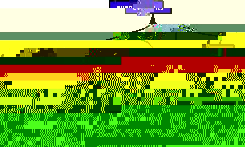

So far, we've only looked at the main window, and have not really edited anything. Rosegarden provides three different editors, each with its own unique view of the data. You can view the raw Rosegarden events with the Event List Editor, you can work with a piano roll metaphor with the Matrix Editor, or you can see your data as notation with the Notation Editor. Each of these editors works on a segment level, so you must have at least one segment selected in order to open one. If you wish to start with an editor from scratch, you must first create an empty segment with the pencil tool, as I described in chapter 2, and then select it.
The event list editor is for editing the composition at the event level. This is the most raw of the three edit views, and the most difficult editor to use.
Rosegarden is not a pure MIDI sequencer, and it does not store raw MIDI events; instead, it uses its own internal format, which is both more powerful and more flexible. There are many kinds of events in Rosegarden. As you would expect, MIDI notes, controllers and the like are events, but so are hairpins, dynamics, performance directions, clefs and key signatures, etc. Each class of event has its own set of unique properties.
Here are just a few examples of types of events with a few their properties. All of these can be edited from here in the event list editor, although you probably will find little occasion to tear an event apart and rearrange its insides.

Out of the box, the notation editor is the default, but that editor is a chapter unto itself. For the moment, let us begin with the simplest of the three. Pick a segment, and then right click on it. Choose "Open in Event List Editor" from the resulting context menu.
If you've started with a blank segment, as I did, there's not much to see here:

You can change the way Rosegarden displays the timing of events
using the
 buttons, displaying time as Musical, Real, or Raw.
buttons, displaying time as Musical, Real, or Raw.
If you have a more complex segment than the one depicted above, you may wish to use filters to focus in on the classes of events that most interest you. Simply check or uncheck boxes from the Event filters box.

You can also use the selection event filter
 .
Make a selection of events, then use the filter to weed out unwanted
events from the selection. Everything the filter misses will still be
selected after it has been applied.
.
Make a selection of events, then use the filter to weed out unwanted
events from the selection. Everything the filter misses will still be
selected after it has been applied.

The truly brave among you might want to experiment with creating something entirely from scratch.
If you click on the
 icon, you'll be presented with a dialog like this that allows you to
make your own event out of whole cloth:
icon, you'll be presented with a dialog like this that allows you to
make your own event out of whole cloth:

You may edit
existing events using either the simple
 editor...
editor...

..or the advanced
 editor.
editor.

You may delete
events using the
 icon.
icon.
I have elected to demonstrate only those uses which I judge are most difficult for you to figure out on your own. While I am only covering a select few types of events, the process for creating (or changing) all of them is similar.
One thing that can only be done from the event editor is the insertion of a mid-track program change. This might be useful, for example, if you wish to switch a string part from playing normally to playing pizzicato and back without having to write the parts on different tracks to assign them to different instruments.
In version 1.0 of Rosegarden, the facility for entering program changes is rather crude and unwieldy. It may see improvement in future versions, but for the moment, the only mechanism provided is the entry of program changes by number. There is no facility for changing the bank anywhere except at the instrument level, so any program changes you insert directly into segments will be done within the same bank the track's instrument uses.
If you want to change a "strings" instrument to play using a "pizzicato" program at a particular point...
The easiest thing to do is move the playback pointer to the desired insertion point. In this example, I've done it using the transport in beat:bar mode to ensure I'm in exactly the desired spot to insert a program change at bar 2, beat 1, tick 0.
Remember that the
 button changes display modes on the transport.
button changes display modes on the transport.

If you right click on this segment and choose to open it in the event list view, your cursor should already be at the right spot to insert a program change at the desired time. In this sample, there happens to already be a note at that particular time, but that will not prevent you from inserting a program change event here at the same time. In fact, if you are inserting a program change into otherwise empty space, you will have to set its time manually.

Click on the
 icon to insert a new event. The dialog will open out to a default
event type of "note." You want to dial "programchange"
into the "Event type" combo box to make this event into a
program change.
icon to insert a new event. The dialog will open out to a default
event type of "note." You want to dial "programchange"
into the "Event type" combo box to make this event into a
program change.

Now you should have a dialog like this. Except, of course, I have already twiddled the settings in this particular example.

Now you need to dial in the program change by number. Unlike the numbers used elsewhere in Rosegarden (which appear out beside the name when changing programs in the Instrument Parameters box, for example), these are zero-based, rather than one-based. If the program "Acoustic Grand Piano" shows up as program 1 in your studio, you'll have to subtract one from that and use 0. I've included a zero-based list of General MIDI program numbers in Appendix C for your convenience. In this case, "Pizzicato" is program number 45.
You may have some occasion to change the time of the event.
Click on the
 button out beside "Absolute time" and you will be presented
with a dialog that allows you to re-assert the fact that you want
this event at 2:1:0. You'll need to dial in the Measure (2) beat (1)
and 64ths (0) to get the event to come in at the desire time. If this
does become necessary, at least you already know what time to aim
for, having used the playback pointer and transport to get the
"address" of this particular moment in time.
button out beside "Absolute time" and you will be presented
with a dialog that allows you to re-assert the fact that you want
this event at 2:1:0. You'll need to dial in the Measure (2) beat (1)
and 64ths (0) to get the event to come in at the desire time. If this
does become necessary, at least you already know what time to aim
for, having used the playback pointer and transport to get the
"address" of this particular moment in time.

I don't have time to do a proper job of discussing this rather involved and arcane subject at the moment, and I may remove this before publishing the final draft of this book. In the meantime, here is a message from Pedro Lopez Cabanillas, author of most of these features, on the subject of sysex in Rosegarden:
> Would you mind giving me a rundown?
About your question: System Exclusive messages can be recorded, played, exported to Standard MIDI Files and imported from them as any other MIDI event. It's not worth to mention that, IMO, as that's what everybody expects from a MIDI sequencer. But you know that was a hard way to reach this place.
You need to use the Event List editor for any editing on System Exclusive events.
To create a new SysEx event from scratch:
insert Event (star button, or menu Edit->insert event)
select "systemexclusive" in the event type combo.
3. fill the "Data" field, write some Hex values starting with "F0" and ending with "F7". Alternatively, you can use the "Load Data" button to import the payload from a "SYX" file.
The load function only imports the first sysex block from the file, if there is more than one. SYX Files created with Cakewalk can be loaded into RG.
Use the "Save Data" button to store the payload of an existing SysEx event into an external "SYX" file.
The Matrix editor is based around the familiar piano roll metaphor you have probably seen in other packages. It is useful for taking a hands on approach to tweaking notes where their performance is more important than their visual appearance as notation. I find myself using the Matrix most often for two main purposes. It's my preferred method of sequencing percussion parts, and I use it to knock notes out of precise alignment on purpose; for example, when sequencing rolled chords in order to make a MIDI guitar sound more credible.
It is important to note that Rosegarden is not purely a MIDI sequencer, and at no time can you ever directly edit raw MIDI events. It stores events using an internal meta format that includes quite a bit of information about each note. Rosegarden's events do of course cover the fundamentals of pitch, velocity and duration, but they also include such attributes as stem direction, beam state, accidental state, ties, slurs, slashes, accents and so forth. Of special note, every Rosegarden event maintains independent duration values for performance and display. This makes it possible to create a composition that looks good printed on paper, and yet preserves all of the slight human imperfections that give a performance its character.
In version 1.0, the Matrix can only edit performance attributes. This can create interesting challenges both for performance and notation. If you are working on a human performance, and you draw notes to their full length here in the Matrix, you may damage the character of the performance slightly. On the other hand, if you draw slightly long or short notes here, or knock the timing off the grid lines intentionally, you will create ugly notation in the process. In either case, you can make adjustments to massage away these differences from the Notation Editor, as I will explain in the next chapter.
One particularly noteworthy side effect of the way Rosegarden stores events is that tied notes are a series of discrete dashes here on the Matrix. It is really not possible to determine whether a series of notes at the same pitch will sound as one note or several without looking at the affected area from the Notation Editor.
Let's start with an empty segment one measure long, and I'll show you the basics. Draw your segment, select it, and then right click on it and choose "Open in Matrix Editor" from the resulting context menu. You'll see something like this:

I will go into more detail about the local cursor in the notation chapter, but it does have its uses here in the matrix as well. If you take a second look at the rulers, you should see that the one toward the top of the screen has a magenta cast. This ruler is for controlling the local cursor, which is a magenta version of the playback pointer. You can set it in the same fashion you set the playback pointer, and the two cursors function independently of each other. The local cursor's main function here in the matrix seems to be to set the destination location for paste operations.

Now let's do a little one bar loop for demonstration purposes.
Just like on the main view, the
 cursor is used to create something new from scratch. In this case, of
course, we're entering a note. Let's pepper this thing with a few
well placed random pitches:
cursor is used to create something new from scratch. In this case, of
course, we're entering a note. Let's pepper this thing with a few
well placed random pitches:

You may have noticed that those came out as quarter notes. In order to control the default length of new notes, you must change the grid setting. Let's enter eight 8th notes. First dial in the 8th note on the grid button:

Now new notes you enter will take this duration by default:

It's obviously a bit tedious, but you can enter an entire composition this way if you desire.
You can move notes around with the
 cursor.
cursor.

You can resize notes with the
 cursor, by clicking on a note and dragging it.
cursor, by clicking on a note and dragging it.

By default, resize operations snap to grid lines. If you wish to drag the note to some arbitrary length, do so by holding the shift key while dragging the note.

All of these operations can be performed on more than one note at
a time. In order to do so, you need to make a selection. You can use
the
 cursor to select individual notes one by one while holding down the
shift key.
cursor to select individual notes one by one while holding down the
shift key.

If you wish to select a broad range of notes, you can select every note of a given pitch by selecting the arrow cursor and shift clicking on the individual notes on the piano keyboard. Each click will select every note of the desired pitch, and you can select any number of pitches in this fashion.

It is also possible to select a band or several bands of notes by sweeping the arrow cursor across the keys while holding shift.

Finally, you can use the selection event filter to cull events from your selection. Start by making a broad selection, and then click on the filter icon to summon my dialog. You can then dial in various criteria for the notes you wish to remain selected after the filter is applied.
(The event selection filter is an example of how different developers on Open Source projects have different ideas how things should work, and they implement parallel ways of accomplishing the same thing. I put a considerable amount of effort into developing the event selection filter, but once I discovered the ways to make selections using the matrix keyboard, I never actually use the fruit of my own labor. I don't even feel like it's important enough to bother documenting its use in detail. Ironic, isn't it? At least I can laugh at myself.)
Velocity is a MIDI parameter that describes how hard a note was hit on the keyboard or other device. It allows for finer expression of volume than what can be accomplished merely by adjusting the volume parameter for the MIDI channel. If you have a velocity sensitive keyboard, this parameter will be recorded as you play. Under certain other circumstances, you may end up with events that have no velocity property at all, or a default velocity of 100. Regardless of how it did (or didn't) get there, it's a simple matter to tweak it to suit your needs.
If the events you're editing have velocity properties, you can edit them with the Velocity Ruler. If it's not visible, turn it on from the View menu with View -> Show Velocity Property Ruler.
In this example, all the events have a velocity of 100, and they show up as orange bars on the ruler.

They can be changed by dragging them up and down, and the bars change colors to reflect their value. Here I've arranged them so that you can see each bar. Notice that the notes on the Matrix itself change to reflect these same colors.

NOTE: It can indeed be somewhat tricky to know which note you're adjusting if there are several notes of the same duration at the same time. I truthfully have no idea if there is some trick to this to make managing the process more foolproof. If anyone knows, email me, and I will mention in the next edition.
Sometimes note events are created without velocity properties. In that case, there will be nothing to see or do on the Velocity Ruler until you add some velocities. You'll need to select a range of notes and then use Adjust -> Velocity -> Set Event Velocities to create some. This presents you with a dialog box that offers you several different options for how to set these up. The Value ranges from 0, which is the softest possible key strike, to 127, which is the most forceful.

It's possible to transmit controllers from here in the matrix with the various Control Rulers. Let's add a Modulation ruler. Choose View -> Add Event Ruler -> Modulation Controller and you should now have a new tab at the bottom of your Matrix.

If you right click on the ruler you can insert a controller event, or even an entire line of them.

In this example, I have elected to insert a line of controllers. It's impossible to capture X cursors, and I'm far too lazy to try to draw that little pointing finger, so I will instead describe what I did. After making the selection from the menu, the cursor changed to a pointing finger. I picked a start point with this finger, and continued to hold the button down while dragging the resulting line up and to the right. After I released the button, it produced this line of controllers:

You can move individual controllers up and down, or you can select and move them in groups. It's rather less obvious than selections elsewhere, but if you look closely, you can see that selected controller bars are each outlined in red.

If you hold down shift and drag these up and down as a group, they all move at once.
If you need to do a lot of complicated drum patterns, you might be better off to use Hydrogen. Rosegarden can import Hydrogen patterns
In order to have some place to put the drums, create a new segment four bars long.

NOTE: I'm leaving this mistake in for the amusement value. I was about to submit a bug report documenting how I created a segment four bars long, opened it in the matrix, and could only edit three bars. Can you spot the reason why that happened? Hint: that ain't four bars long. :)
In order to hear drums, you need to route this track to a percussion instrument from the main window. If you have General MIDI-compliant equipment, all that should be necessary is to route this track to the instrument #10 belonging to a suitable device.

In this particular example, I want to use the TR-808 drum kit that's part of the soundfont I'm using on my Sound Blaster Live!, so I need to dial up bank 1 0 (where the extra drums are) and set the program to "TR 808." (Notice that I do not have the [x] Percussion box checked. That's because I'm not using a GS device that has drum kits in the same 0 0 bank as the General MIDI programs. Instead, this device has the alternate drum kits in bank 1 0.)

Now that the track is routed to play using suitable sounds, head back to the matrix window. It's probably a good idea to pick a finer resolution than the standard quarter note for the matrix grid. For this part, 16th notes were convenient, so I dialed 1/16th into the Grid combo box.

To make it easier to get the pattern right, set the first bar to loop using the ruler on the bottom. (Notice that the ruler on top has a purplish cast. It's for controlling the local cursor, which I will discuss in the notation chapter. The ruler at the bottom is for setting loops, and moving the blue playback pointer.)

The rest is trial and error. Set the main transport window to loop
mode
 and hit play. Use the edit tools to insert, remove, and move notes
until you get a pattern you like. Rosegarden provides no facility for
labeling which keys play which drums, so you may need to putter
around a bit before you figure out where they are. This example uses
a bass, a snare, and a couple of hi-hats, and I have completed my
pattern in this snapshot.
and hit play. Use the edit tools to insert, remove, and move notes
until you get a pattern you like. Rosegarden provides no facility for
labeling which keys play which drums, so you may need to putter
around a bit before you figure out where they are. This example uses
a bass, a snare, and a couple of hi-hats, and I have completed my
pattern in this snapshot.

Select all the event and paste them three times. Use the top ruler to set the local cursor to the destination for each paste operation. You should wind up with something like this:

Now set only the last bar to loop, then adjust the pattern to make a little fill.

TIP: I found it a trifle fiddly using copy and paste to make these copies. I didn't get the placement of the local cursor quite right, and I had to quantize the results. The next time I had to do this, I started with a segment one bar long, looped it, then when the time came to copy it three times, I marked it as repeating in the Segment Parameters box, then double clicked on three of the copies, selected all four segments, and used Segments -> Splint and Join -> Join to join them back into one; then I finished by un-checking repeat for the segment. It's a toss-up whether method B is faster, but it's definitely more precise.